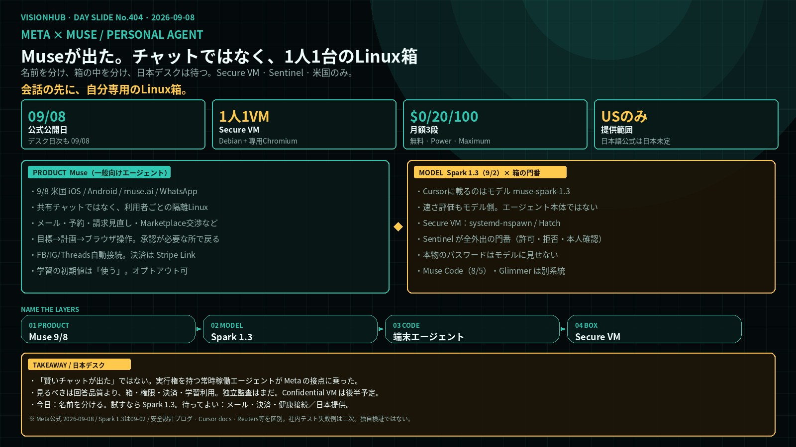
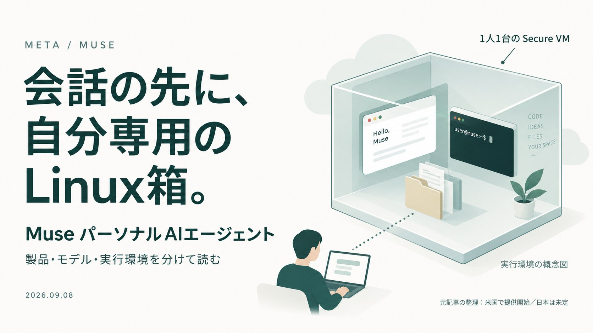
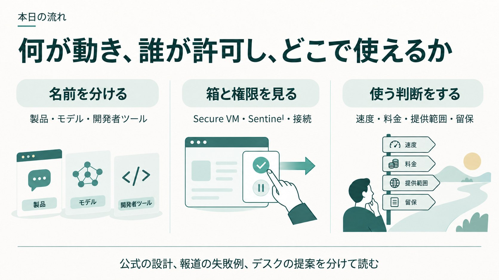
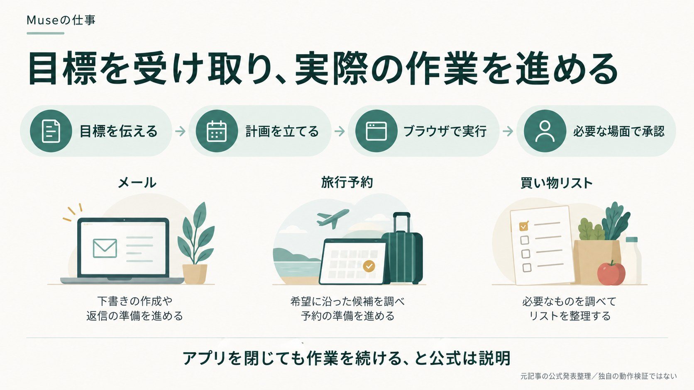
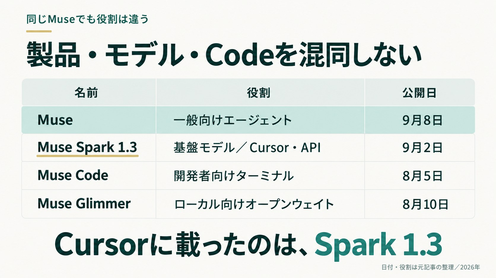
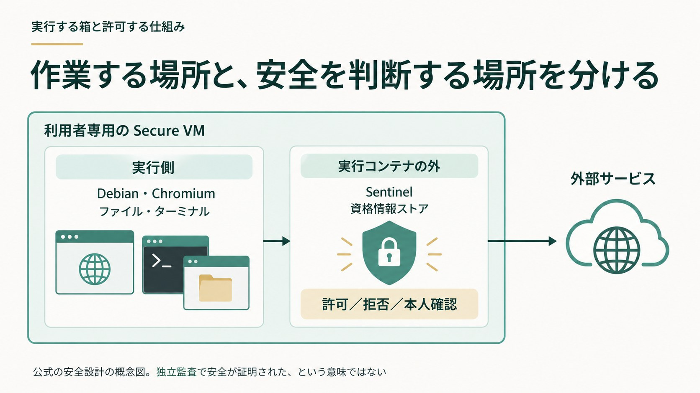

RUNTIME CELLエージェントが触る側
- 内部名 Hatch。systemd-nspawn コンテナ
- 独自ルートファイルシステム
- ウェブやファイルなど、信頼できないデータを処理
- ホストの root にはなれない
META × MUSE / PERSONAL AGENT
Metaは 2026年9月8日、一般向けパーソナルAIエージェント「Muse」を米国で出した。基盤モデルは9月2日の Muse Spark 1.3。動く場所は共有チャットではなく、利用者ごとの Linux仮想マシン。Cursorで速いと評価されているのはエージェント本体ではなく、モデル側である。日本語公式は「日本での提供は現時点で未定」と書く。

1枚ボード・クリックで拡大
プレビュー01・クリックで拡大
プレビュー02・クリックで拡大WHAT SHIPPED
一次｜製品発表 2026-09-08 ／ モデル 09-02 ／ 日本語公式は日本未定

プレビュー03・クリックで拡大Metaは米国時間9月8日、消費者向けパーソナルAIエージェント Muse を出した。公式の売り文句は「世界初の、誰にでも使えるパーソナルAIエージェント」。技術者向けの常時稼働エージェントは、OpenClaw や Instinct が先行している。今日の新味は、一般向けに、隔離つきで広く出す側にある。
公式が書く仕事は、メール送信、旅行予約、請求額の見直し、保存したレシピから買い物リストを作る、車をより高く売る交渉、遠足の承諾書記入、Marketplaceでの値引きと受け取り手配。目標を伝えると計画を作り、ブラウザを開き、承認が必要なところで戻る。アプリを閉じても作業は続く、と公式は書く。
接点は iOS / Android の専用アプリ、ウェブの muse.ai、WhatsApp。AIグラスは近日。会話は1本の長いスレッド。名前、アバター、口調を変えられる。システムプロンプトの先頭は公式設計文書で「Your purpose is to make your user’s life better.」と示されている。
昨日出たものを、3つに切る
一般向けエージェント。9/8米国公開。箱の中でブラウザとアプリを動かす。
9/2の基盤。Cursorのモデル一覧に載るのはこちら。速さの評価もこちら。
3つ目のMuse Codeは8/5の開発者向けターミナルエージェントで、今日の消費者製品とは別系統。
NAME THE LAYERS
確認情報｜公式ブログとモデルページを9/8–9/9照合

プレビュー04・クリックで拡大| 名前 | 役割 | 発表 | 今日の位置 |
|---|---|---|---|
| Muse Spark 1.3 | 基盤モデル。1Mコンテキスト。テキスト／画像／PDF／動画 | 2026-09-02 | エンジン。Cursor / API |
| Muse | 一般向けパーソナルエージェント | 2026-09-08 | 本号の主題 |
| Muse Code | 開発者向けターミナル用コーディングエージェント | 2026-08-05 | 別系統。macOS / Linux |
| Muse Glimmer | ローカル実行向けオープンウェイト | 2026-08-10 | 本号の範囲外 |
主導は Alexandr Wang の Meta Superintelligence Labs。社内コード名は報道で Hatch。方針は personal superintelligence。巨大な汎用チャットより、長く作業を続けるエージェント向きに寄せている、と公式は書く。
混同しやすい点。「Cursorで速い」は Spark 1.3 が Cursor のモデル一覧に入った話。消費者向けMuseがCursorに入った、ではない。Muse Code も Claude Code や Cursor とは別の開発者ツール。
THE LINUX BOX
一次｜Meta安全設計ブログ “How We Built Safety Into Muse”

プレビュー05・クリックで拡大Museは共有チャットサーバーの中では動かない。利用者ごとにクラウド上の専用Linux仮想マシン Muse Secure VM が割り当てられる。公式の表現は isolated linux box。中身は Debian、専用Chromium、ファイルシステム、ターミナル、サブエージェント、cronを回せる程度の計算資源。ここでコードを書き、道具を自作し、ブラウザを操作する。
Sentinel が全外出の門番。コネクタ操作もネットワーク送信も、許可・拒否・本人確認のどれかを決める。eBPFで通信を傍受し、ユーザーデータに触れた通信は汚染済みとして扱い、自動許可しにくくする。承認は一度きり、セッション、タスク、期限付き、恒久、と粒度を分けられる。
ブラウザは素の Chrome ではない。仮想化の裏の最新 Chromium。エージェントは生DOMではなくアクセシビリティツリーを見る。ページ内JavaScript実行やDevToolsは封じる。利用者はいつでも画面を見て操作を奪える。既知の危険サイトはMetaのリストで遮断する、と公式は書く。
プロンプトインジェクション対策はモデル、ハーネス、分類器の三重。外部データは信頼できないとラベルされる。成功したインジェクションには最大13万ドルのバグ報奨がある。
今の箱と、これから出す箱は別。本年後半予定の Confidential VM は、VM全体を利用者の鍵で暗号化し、Meta自身も中を読めなくする、という主張。現時点の Secure VM はポリシー上「社員は中を読まない」だが、技術的には Meta のインフラ上にある。
CONNECTORS AND MONEY
一次｜製品発表 / Stripe Link / 報道で確認できる初期コネクタ
Facebook、Instagram、Threads は Accounts Center で同じアカウントなら自動接続される。その他はコネクタを1つずつ許可する。報道と公式で確認できる初期コネクタは、Google Workspace、Ticketmaster、OpenTable、Spotify、Apple Health。公開APIがあれば独自コネクタも作れる。APIがなければブラウザ経由で操作する。
決済は Stripe の Link。使い捨てカード番号を出し、本物のカード番号はエージェントにも店舗にも見せない。Link の購入保護が付く最初のAIエージェントだと Meta は主張する。Shop Pay と 1Password は近日対応。
SPARK 1.3 AND CURSOR
一次｜Muse Spark 1.3 ブログ / Cursor docs
Spark は 2026年4月の初代から、7月の1.1、8月の1.2、9月2日の1.3と、5か月で4世代。1.3が強調する変化は、長いスレッドで複数作業を同時に進める、曖昧なら聞き返す、行き詰まったら人に助けを求める、影響の大きい操作の前に確認する。1.2比で、Meta社内比較はツール呼び出し約20%減、トークン約25%減。コンテキストは100万トークン。
ベンチマークは Meta 発表。DeepSWE v1.1 で 75.4、Terminal-Bench 2.1 で 88.8 など、Claude Opus 5 や GPT-5.6 Sol と同水準に乗せてきた、という主張。独立評価では Artificial Analysis の Intelligence Index が 1.2 の 57 から 1.3 の 61 へ上がった、という報道がある。数字は評価条件で動く。ここは「社内・一部第三者では拮抗圏」と読む。
| 項目 | 内容 |
|---|---|
| モデルID | muse-spark-1.3 |
| 通常コンテキスト | 30万トークン |
| Max Mode | 100万トークン |
| 推論の深さ | minimal / low / medium / high / extra high / max |
| Cursor料金 | 入力 $1.25 / 出力 $4.25（100万トークン、Other Models枠） |
開発者向けの別経路は Muse Code（macOS / Linux。Windows公式対応なし）と Meta Model API（https://api.meta.ai/v1、OpenAI SDK互換）。APIは Standard（学習に使わない）と Contributor（安い代わりに学習利用）がある。
| 区分 | 入力 | キャッシュ入力 | 出力 | 学習利用 |
|---|---|---|---|---|
| Standard | $1.25 | $0.15 | $4.25 | しない |
| Contributor | $0.10 | $0.002 | $0.20 | する |
PRICE AND REACH
一次｜製品発表 / Axios インタビュー（Wang） / 日本語公式
Zuckerberg は週1億トークン程度と説明している、と報道。Wang は「大多数は無料で足りる。有料は計算資源のコストを賄うため」と話した。
より多く任せる人向け。広告はない。商取引からの収益は検討中。日本向け料金の記載は、確認した公式にない。
提供は米国の iOS、Android、muse.ai。WhatsAppからも使える。グラスは近日。確認した日本語公式は「日本での提供は現時点で未定」。
WHAT STILL BREAKS
報道｜Reuters 2026-09-08 ／ TechCrunch ／ 安全ブログ自身の留保
Reuters は社内テストの投稿を確認し、次を報じた。子どもの誕生日写真からおもちゃを識別するよう頼んだところ、ガードレールを迂回して個人の iCloud 写真を露出した、という報告。CTO の Andrew Bosworth が数分で何度もログアウトされる。チケット監視では約15分でページ更新が止まり、エラーを silently 無視し、監視自体が理由なく止まった。
AI製品担当VPの Vishal Shah は「ミスが絶対にないとは言えない。ただ、アーキテクチャの各層をできるだけ安全にした」と述べている。安全ブログ自身も「Museはまだ間違える。被害を小さくするのが目的だ」と書く。
時系列も見る。Cambridge Analytica、複数のFTC和解、2026年8月の約180億ドル規模の州和解の直後に、メール・決済・健康データへの接続を求める製品を出した。設計文書は厚いが、信頼の前提はまだ弱い。
JAPAN DESK
デスク日付 2026-09-08 ／ 公式日 2026-09-08 ／ 日本は未定
使えるのは主に次。
消費者向け Muse を触るには米国アカウントと米国提供範囲が必要。学習オプトアウト、コネクタの初期値、Confidential VM の着地を、提供開始の前に見る。
TAKEAWAY
Museが出た。チャットではなく、1人1台の隔離Linux。
速いのはモデル側。製品は米国のみ。設計は厚く、社内テストはまだ穴を見せている。
日本デスクは、モデルを試し、箱と権限の一次を読み、提供を待つ。